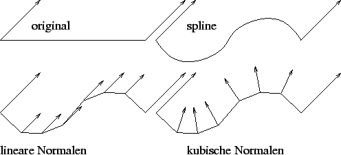
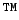

Nächste Seite: Bemerkung: Aufwärts: Visualisierung Vorherige Seite: Deformiertes Gitter Inhalt
Wünschenswert wäre aber eine Kugel, was in meiner Anwendung nicht ganz erreicht wird. Ich suchte also einen Algorithmus, der Dreiecke anhand der Normaleninformation verfeinert, dabei aber jede Kante unabhängig von der dritten Ecke des Dreiecks unterteilt. Dies ist notwendig, will man die Verfeinerung ohne Nachbarschaftsinformationen durchführen. Dabei stieß ich auf ATIs TRUFORM-Erweiterung, die laut [4] bereits 2001 mit der Radeon 2 Grafikkarte auf Hardware implementiert war. Diese Erweiterung erzeugt Dreiecksgitter einer fest vorgegebenen Verfeinerungsstufe mit Gitterpunkten, die auf dem bikubischen Bezier-Patch liegen, das durch das Dreieck und seine Normalen definiert ist. Die Kanten von Bezier-Patches sind die zu den jeweiligen Ecken und ihren Normalen gehörenden Splinekurven. Damit hängt auch eine regelmäßige Unterteilung dieser Kanten nicht von der dritten Ecke ab und die TRUFORM-Flächen auf gleicher Stufe unterteilter benachbarter Dreiecke fügen sich nahtlos aneinander.
Die Normalen der so erzeugten Dreiecke können wahlweise linear oder kubisch interpoliert sein. Warum lineare Interpolation nicht so gute Resultate liefert, soll Abb. 4.12 veranschaulichen. Andererseits benötigt die kubische Interpolation mehr Rechenzeit.
|
 |
ATI TRUFORM
